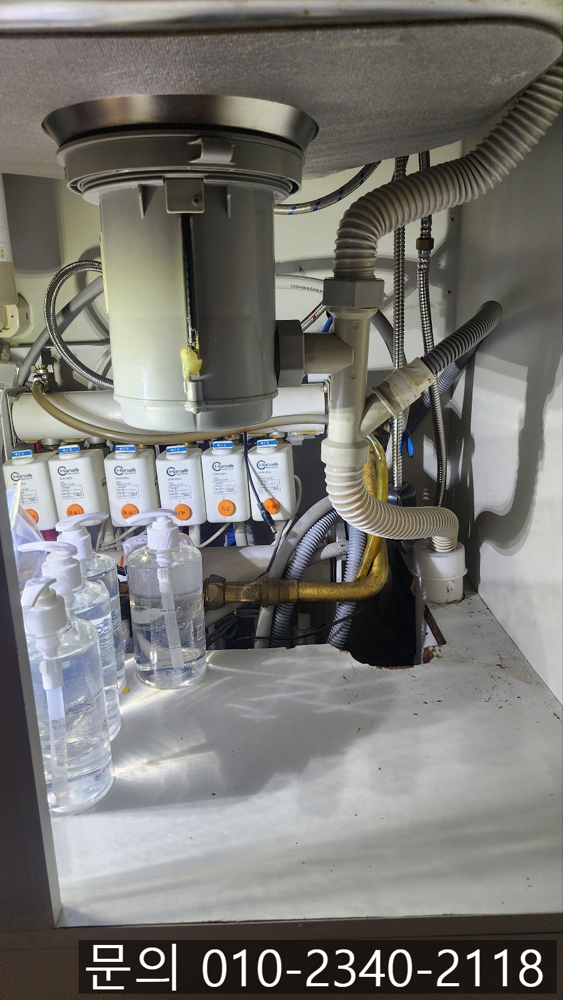
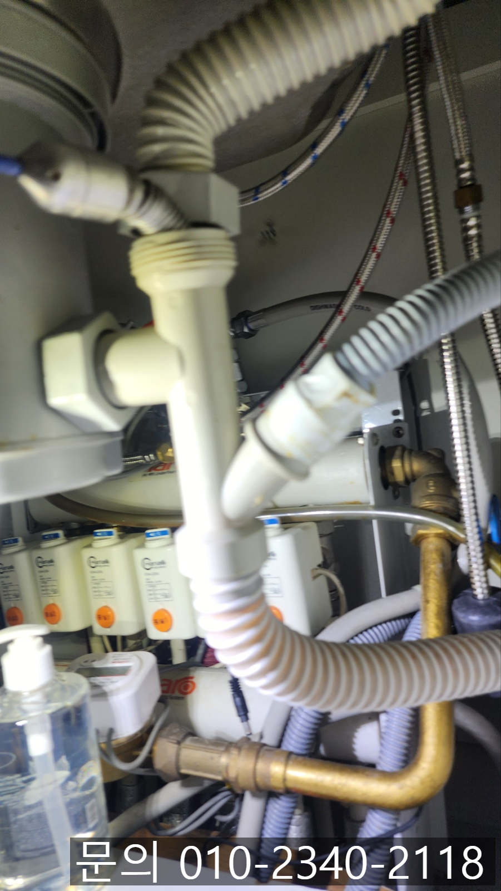
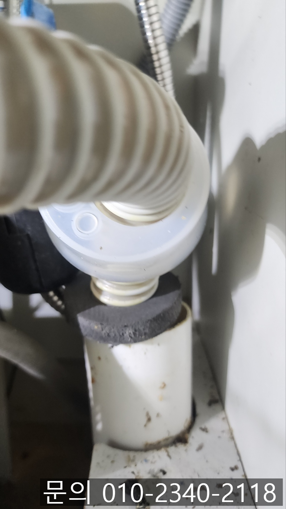
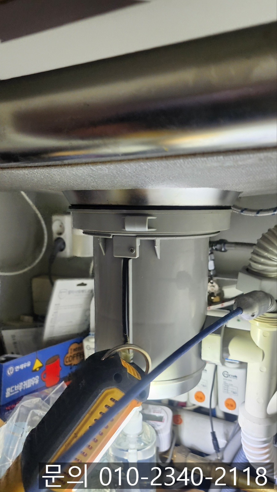
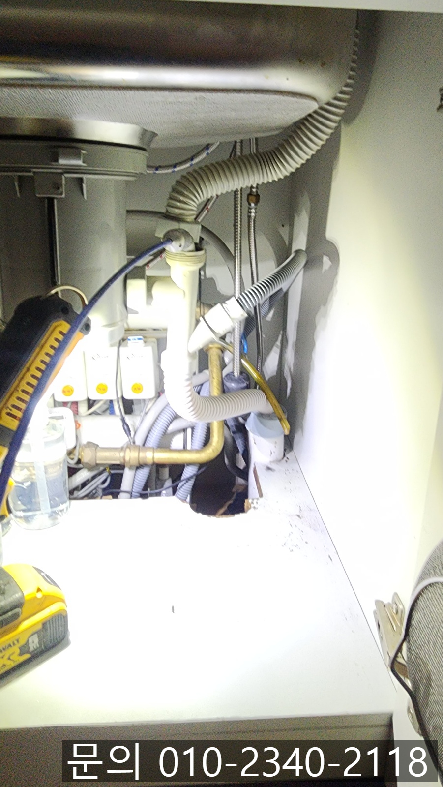
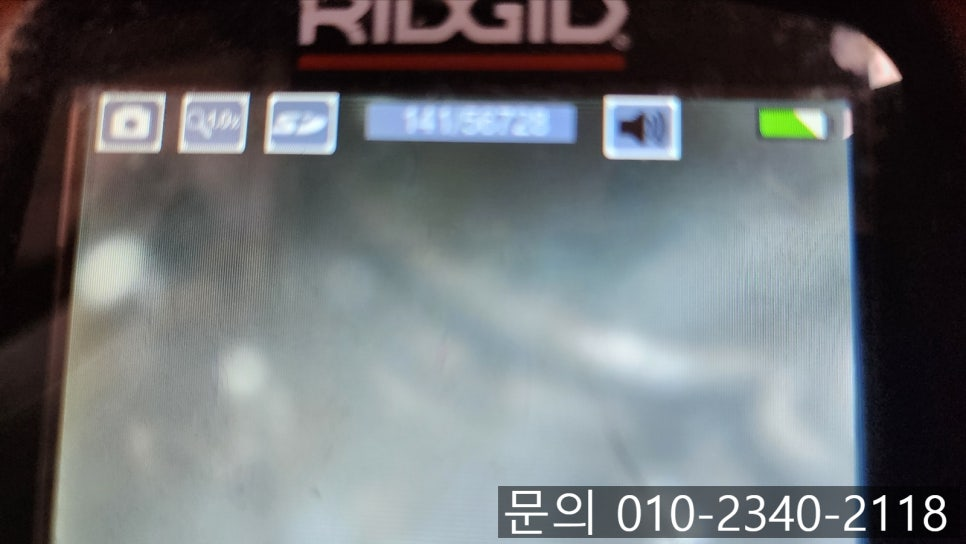

🏠 죽전동 싱크대 막힘 용인 동천동 하수구 배관 막혔을 때 이물질 제거하는 방법
용인 죽전 싱크대막힘 전문 시공 후기
📋 작업 개요
- 위치: 용인 죽전, 죽전, 용인
- 서비스 유형: 싱크대막힘, 하수구막힘, 배관막힘, 역류해결, 뚫는업체
- 작업 일시: 2025. 6. 6. 13:50
- 업체명: 하수구수사대 (010-5615-2118)
🔍 문제 상황
안녕하세요.
죽전동 싱크대 막힘, 용인 동천동 하수구 배관 막혔을 때 이물질 제거하는 방법을 소개해 드릴 하수구 다큐입니다.
죽전동 싱크대 막힘으로 다녀온 현장은 아파트였습니다.
주방의 싱크대에 문제가 발생한 것 같다는 고객님의 전화를 받고 주소를 전달받아 빠르게 방문해 드렸습니다.
싱크대에서 일을 하면 사용한 물이 빠지기는 하지만 너무 느려서 사용하기 어렵다는 연락이었어요.
싱크대 막힘의 원인
죽전동 싱크대 막힘의 원인은 크게 4가지로 나눌 수 있는데요.
음식물 찌꺼기.

🔎 원인 분석
💡 전문가 진단: 싱크대 막힘의 원인
기름기가 있는 음식물이나 국물 찌꺼기, 밥알, 야채 껍질 등이 싱크대를 사용하면서 물과 함께 배관으로 흘러들어가 쌓이면서 막힘이 발생하게 됩니다.
2. 기름과 세제의 혼합
음식에 포함되어 있는 기름 성분이 그릇을 닦기 위해 사용한 세제와 만나 끈적한 비누 찌꺼기를 형성하면서 쌓이게 되어 배수 속도가 느려지게 됩니다.
3. 배관 경사 불량
배관에 경사가 낮을 경우 물이 위에서 아래로 흘러가지 못해 고이고, 이물질이 쌓이면서 막힘이 발생하게 됩니다.
4. 이물질
일회용 비닐이나 행주 조각, 수세미 등 실수로 이물질을 빠트려 막힘이 발생하기도 합니다.
싱크대 막힘의 원인을 간단하게 알아봤으니 하수구 다큐가 죽전동 싱크대 막힘 현장에서 해결하는 방법을 소개해 드리겠습니다.
죽전동 싱크대 막힘 고객님께 주소를 받아 현장에 도착해 보니 별다를 것 없는 평범한 주방이었어요.

🔧 작업 과정
고객님께 나타나는 현상에 대해 설명을 들었지만 물을 틀어 테스트를 진행하면서 직접 점검을 시작했습니다.
싱크대에 물을 틀어 확인해 보니 고객님께서 말씀하신 것처럼 배수 속도가 많이 느린 상태였어요.
많은 양의 물을 받아 한 번에 쏟아부으면 물을 소화해 내지 못하고 역류도 일어나는 상황으로 배관 내부에 문제가 있는 것은 확실해 보였습니다.
정확한 원인을 파악해 보기 위해 내시경 카메라를 배관 내부로 진입시켜 확인해 보기로 했어요.
배관 내부가 기름 슬러지로 가득 차있는 건 아니었는데 평소와 다른 형태의 무언가가 보였습니다.
내시경 카메라를 이용해 좀 더 가까이 진입해 촬영해 보니 동그란 무언가가 보였어요.
용인 동천동 하수구 배관 막혔을 때 원인이 바로 이물질이었던 것 같습니다.
용인 동천동 하수구 배관 막혔을 때 원인을 파악했으니 필요한 장비를 챙겨 제거하는 작업을 진행했어요.
평소에 사용하는 플렉스 샤프트가 아닌 좁은 배관에서 이물질을 잡아 빼주는 장비를 이용해 제거했습니다.
배관 안에 싱크대 주름 호스가 들어가 물의 흐름을 방해하고 있었어요.
이물질을 제거하고 다른 문제는 없는지 내시경으로 다시 한번 검수한 다음 많은 양의 물을 흘려보내면서 테스트도 진행해 드렸습니다.
이물질을 제거한 덕분에 아무런 문제 없이 제 기능을 하기 시작했어요.
고객님도 주름 호스가 왜 들어간 건지 모르겠다며 의아해하셨지만 다시 막힘없이 사용할 수 있게 되어 좋다고 말씀해 주셨습니다.
용인 동천동 하수구 배관 막혔을 때 이물질 제거하는 방법은 원인에 따라 달라질 수밖에 없습니다.


✅ 작업 완료
하수구 다큐는 어떤 현장이던 정확한 원인을 찾아 원인에 맞는 장비를 이용해 문제를 해결해 드리고 있어요.
지금 하수구 막힘으로 고민하고 계신다면 연락 주세요.
완벽하게 뚫어드리겠습니다.
경기도 용인시 수지구 수지로342번길 32 5층 508호 에이치01




⚠️ 주방 싱크대 배관 막힘 예방 수칙
- ✅ 기름기가 묻은 식기나 프라이팬은 설거지 전 키친타올로 반드시 기름때를 닦아내세요.
- ✅ 주기적으로 싱크대 개수대에 뜨거운 물을 가득 받아 한 번에 내려 배관 내부 기름을 씻어내세요.
- ✅ 배수구 거름망을 미세한 필터로 사용하시고 음식물 찌꺼기가 틈으로 새어 들지 않게 관리하세요.
- ✅ 베이킹소다와 식초를 뜨거운 물과 함께 일주일에 한 번씩 부어주면 배관 살균과 막힘 예방에 좋습니다.
💡 핵심 정리
- 확실한 장비 작업(내시경 점검 및 샤프트 스케일링)으로 원인을 뿌리 뽑습니다.
- 작업 후 1년 이내에 동일한 부위 재발 시 100% 무상 A/S 서비스를 보장합니다.
- 서울 · 경기 · 인천 전 지역에 24시간 언제든 긴급 출동할 수 있도록 항시 대기 중입니다.
❓ 자주 묻는 질문 (FAQ)
🚨 용인 죽전 싱크대막힘 문제로 고민이신가요?
정확한 원인 진단과 확실한 시공으로 재발 없는 해결을 약속드립니다.
24시간 긴급 출동 | 서울 · 경기 · 인천 전지역 | 1년 내 재발 시 무상 A/S